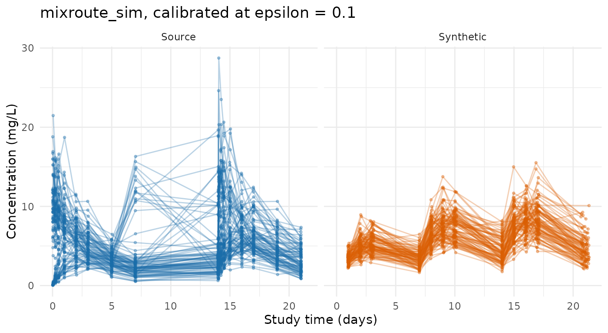

Demo: Using synpmx_calibrated
Andrew Stein
Source:vignettes/calibrated-demo.Rmd
calibrated-demo.RmdOne study through the calibrated path end to end: decide whether the release is worth making, spend the budget once, read what was released, and generate from it for free.
The study is mixroute_sim, a simulated 90-subject
dataset shipped with the package. It is public, so nothing here is a
real disclosure — but it is run through the genuine OpenDP backend
rather than the no-noise fixture, because the point of this document is
what a real release looks like.
The numbers below change every time this page is
built. Privacy noise is never user-seeded; a seed
argument controls ordinary generation only. Two runs of the same call
give different releases, by design.
The acknowledgment
synpmx_calibrated() refuses to run until this has been
called once in the session. It is a deliberate speed bump, not a
technical safeguard.
synpmx_enable_dp_engines()
#> DP engines enabled for this session: the differentially private engines are complete and tested, but not under active development, carry known open findings, and have not been independently privacy-audited. See https://iamstein.github.io/synpmx/articles/synpmx-privacy.html for the trust-boundary decision rule and what a production release additionally needs.Configuration
study <- as.data.frame(mixroute_sim)
study_roles <- pmx_roles(
id = "ID", time = "TIME", nominal_time = "NTIME", dv = "DV", amt = "AMT",
evid = "EVID", cmt = "CMT", cens = "CENS"
)The model and the design are public inputs, and each records where it came from. These are the same objects prior-only generation takes; what calibration adds is a correction to the magnitude.
public_model <- pmx_structural_model(
pk = "1cmt_oral", typical = c(cl = 2, v = 10, ka = 0.5),
source = "the documented generating truth of the mixroute_sim fixture"
)
public_design <- pmx_trial_design(
dose_levels = 100, cohort_sizes = 90, sampling = c(0, 1, 2, 3, 7),
n_doses = 3, dose_interval = 7,
source = "the fixture's protocol: 100 mg on days 0, 7 and 14"
)
priors <- pmx_priors(pk = pmx_prior(
c(1 / 4, 4),
source = "scaling literature: the prediction is believed good to four-fold"
))The prior is the input worth pausing on. It says the model’s prediction is believed accurate to about four-fold in either direction, which is a claim anyone can make without knowing the clearance. It is also the dominant sensitivity term: the noise is measured against its width.
Is this release worth its budget?
Ask before spending. pmx_preflight() reads no data and
spends nothing.
pmx_preflight(priors, epsilon = 0.1, n_subjects = 90)
#> Pre-flight: d = 2, epsilon = 0.1, N = 90 -> f = 0.222
#> quantity prior_fold f expected_fold_error
#> pk 16 0.2222222 1.851749
#>
#> Verdict: worthwhile
#> The release meaningfully narrows the prior.At 90 subjects an epsilon of 0.1 is worth making. The same question at a phase 1 cohort size gets a different answer:
pmx_preflight(priors, epsilon = 0.1, n_subjects = 12)
#> Pre-flight: d = 2, epsilon = 0.1, N = 12 -> f = 1.667
#> quantity prior_fold f expected_fold_error
#> pk 16 1.666667 4
#>
#> Verdict: worthless
#> The noise is as wide as the prior. This release would tell you nothing you did not already assume.
#> Use prior-mode generation instead, or raise epsilon only if governance allows.That is not a marginal call — the function says the release would tell you nothing you did not already assume, and recommends prior-only generation instead. Run this before choosing epsilon, not after.
Spend the budget, once
synthetic <- synpmx_calibrated(
data = study, roles = study_roles, model = public_model,
design = public_design, priors = priors,
epsilon = 0.1, seed = 404, backend = "opendp"
)A warning here is expected rather than exceptional, and this page shows whichever one this build’s draw produced. At an epsilon of 0.1 the noise is a third of the prior’s width, so a fair proportion of draws land pressed against a prior boundary — and when one does, the function says so, because the generated data then reflects the boundary rather than the study. That is the mechanism working: the release is still valid, and it is still nearly uninformative. The public-data evaluation draws this release two hundred times and shows the whole distribution, which is the honest way to read a single one.
What was released
release <- attr(synthetic, "synpmx_release")
release
#> Calibrated structural model (v3)
#> released subject count: 95.3
#> pk correction: 0.989x
#> corrected typical: cl=1.98, v=10, ka=0.5
#> epsilon: 0.1 (formal DP: TRUE)
#> f = 0.21 (worthwhile)Two numbers left the study: a correction multiplying the assumed clearance, and a noisy subject count. Everything else in the printed object is a public input or an accounting entry.
release$privacy$accounting$entries
#> query
#> 1 subject_count
#> 2 pk_correction
#> mechanism
#> 1 OpenDP Laplace measurement over finite f64 values (internally exact-rational/discrete sampling)
#> 2 OpenDP Laplace measurement over finite f64 values (internally exact-rational/discrete sampling)
#> epsilon delta sensitivity dimensions
#> 1 0.05 0 1 1
#> 2 0.05 0 1 1The correction is not an estimate of anything, and the noisy count is not the study’s size — this study has exactly 90 subjects and the released count will not say so. Compare the corrected clearance against the 2 L/day that was assumed: whatever multiple this build drew, a single release at this epsilon is one sample from a wide distribution, not a measurement.
The generated data
str(synthetic)
#> 'data.frame': 1520 obs. of 8 variables:
#> $ ID : int 1 1 1 1 1 1 1 1 1 1 ...
#> $ TIME : num 0 0 1.04 1.98 2.9 ...
#> $ NTIME: num 0 0 1 2 3 7 7 8 9 10 ...
#> $ DV : num NA 0 2.62 4.18 3.61 ...
#> $ AMT : num 100 0 0 0 0 100 0 0 0 0 ...
#> $ EVID : int 1 0 0 0 0 1 0 0 0 0 ...
#> $ CMT : int 1 2 2 2 2 1 2 2 2 2 ...
#> $ CENS : int 0 0 0 0 0 0 0 0 0 0 ...
#> - attr(*, "pmx_source")= chr "calibrated"
#> - attr(*, "synpmx_release")=List of 16
#> ..$ version : int 3
#> ..$ engine : chr "calibrated_structural_generator"
#> ..$ roles :List of 18
#> .. ..$ id : chr "ID"
#> .. ..$ time : chr "TIME"
#> .. ..$ nominal_time : chr "NTIME"
#> .. ..$ tad : NULL
#> .. ..$ occasion : NULL
#> .. ..$ dv : chr "DV"
#> .. ..$ amt : chr "AMT"
#> .. ..$ evid : chr "EVID"
#> .. ..$ cmt : chr "CMT"
#> .. ..$ mdv : NULL
#> .. ..$ rate : NULL
#> .. ..$ cens : chr "CENS"
#> .. ..$ limit : NULL
#> .. ..$ addl : NULL
#> .. ..$ ii : NULL
#> .. ..$ adm : NULL
#> .. ..$ assigned_dose : NULL
#> .. ..$ dose_covariate: NULL
#> .. ..- attr(*, "class")= chr "pmx_roles"
#> ..$ model :List of 8
#> .. ..$ pk : chr "1cmt_oral"
#> .. ..$ pd : chr "none"
#> .. ..$ typical : Named num [1:3] 2 10 0.5
#> .. .. ..- attr(*, "names")= chr [1:3] "cl" "v" "ka"
#> .. ..$ source : chr "the documented generating truth of the mixroute_sim fixture"
#> .. ..$ rx : NULL
#> .. ..$ iiv : Named num [1:2] 0.3 0.2
#> .. .. ..- attr(*, "names")= chr [1:2] "cl" "v"
#> .. ..$ residual_cv: num 0.15
#> .. ..$ endpoints : chr "cp"
#> .. ..- attr(*, "class")= chr "pmx_structural_model"
#> ..$ design :List of 10
#> .. ..$ dose_levels : num 100
#> .. ..$ cohort_sizes : int 90
#> .. ..$ escalation : NULL
#> .. ..$ sampling :List of 3
#> .. .. ..$ : num [1:5] 0 1 2 3 7
#> .. .. ..$ : num [1:5] 0 1 2 3 7
#> .. .. ..$ : num [1:5] 0 1 2 3 7
#> .. ..$ n_doses : int 3
#> .. ..$ dose_interval: num 7
#> .. ..$ dose_times : NULL
#> .. ..$ duration : num 0
#> .. ..$ visit_window : num 0.05
#> .. ..$ source : chr "the fixture's protocol: 100 mg on days 0, 7 and 14"
#> .. ..- attr(*, "class")= chr "pmx_trial_design"
#> ..$ priors :List of 1
#> .. ..$ pk:List of 3
#> .. .. ..$ range : num [1:2] 0.25 4
#> .. .. ..$ source: chr "scaling literature: the prediction is believed good to four-fold"
#> .. .. ..$ span : num 2.77
#> .. .. ..- attr(*, "class")= chr "pmx_prior"
#> .. ..- attr(*, "class")= chr "pmx_priors"
#> ..$ covariates : NULL
#> ..$ covariate_summaries : NULL
#> ..$ corrections :List of 1
#> .. ..$ pk:List of 3
#> .. .. ..$ factor : num 0.989
#> .. .. ..$ at_prior_boundary: logi FALSE
#> .. .. ..$ prior :List of 3
#> .. .. .. ..$ range : num [1:2] 0.25 4
#> .. .. .. ..$ source: chr "scaling literature: the prediction is believed good to four-fold"
#> .. .. .. ..$ span : num 2.77
#> .. .. .. ..- attr(*, "class")= chr "pmx_prior"
#> ..$ corrected_typical : Named num [1:3] 1.98 10 0.5
#> .. ..- attr(*, "names")= chr [1:3] "cl" "v" "ka"
#> ..$ private_subject_count: num 95.3
#> ..$ preflight :List of 6
#> .. ..$ d : int 2
#> .. ..$ epsilon : num 0.1
#> .. ..$ n_subjects: num 95.3
#> .. ..$ f : num 0.21
#> .. ..$ verdict : chr "worthwhile"
#> .. ..$ table :'data.frame': 1 obs. of 4 variables:
#> .. .. ..$ quantity : chr "pk"
#> .. .. ..$ prior_fold : num 16
#> .. .. ..$ f : num 0.21
#> .. .. ..$ expected_fold_error: num 1.79
#> .. ..- attr(*, "class")= chr "pmx_preflight"
#> ..$ privacy :List of 9
#> .. ..$ formal_dp : logi TRUE
#> .. ..$ covariates_private: logi TRUE
#> .. ..$ unit : chr "one subject's complete bounded longitudinal contribution"
#> .. ..$ adjacency : chr "add-or-remove one complete subject"
#> .. ..$ epsilon : num 0.1
#> .. ..$ delta : num 0
#> .. ..$ backend :List of 5
#> .. .. ..$ name : chr "OpenDP"
#> .. .. ..$ version : chr "0.15.1"
#> .. .. ..$ mechanism : chr "OpenDP Laplace measurement over finite f64 values (internally exact-rational/discrete sampling)"
#> .. .. ..$ validated : logi TRUE
#> .. .. ..$ production: logi TRUE
#> .. ..$ accounting :List of 6
#> .. .. ..$ composition : chr "basic sequential composition of pure-DP Laplace releases"
#> .. .. ..$ entries :'data.frame': 2 obs. of 6 variables:
#> .. .. .. ..$ query : chr [1:2] "subject_count" "pk_correction"
#> .. .. .. ..$ mechanism : chr [1:2] "OpenDP Laplace measurement over finite f64 values (internally exact-rational/discrete sampling)" "OpenDP Laplace measurement over finite f64 values (internally exact-rational/discrete sampling)"
#> .. .. .. ..$ epsilon : num [1:2] 0.05 0.05
#> .. .. .. ..$ delta : num [1:2] 0 0
#> .. .. .. ..$ sensitivity: num [1:2] 1 1
#> .. .. .. ..$ dimensions : int [1:2] 1 1
#> .. .. ..$ realized_epsilon: num 0.1
#> .. .. ..$ realized_delta : num 0
#> .. .. ..$ unspent_epsilon : num 0
#> .. .. ..$ unspent_delta : num 0
#> .. ..$ proof_assumptions : chr [1:6] "The structural model, its typical parameters, the trial design, and every prior range were established independ"| __truncated__ "Each subject's correction is computed only from that subject's own rows, so clipping to the public prior bounds"| __truncated__ "OpenDP's Laplace measurement and privacy map are correct for the stated sensitivities." "Basic sequential composition covers every released source-dependent computation in this fit." ...
#> ..$ provenance :'data.frame': 3 obs. of 2 variables:
#> .. ..$ input : chr [1:3] "structural model" "trial design" "pk prior"
#> .. ..$ source: chr [1:3] "the documented generating truth of the mixroute_sim fixture" "the fixture's protocol: 100 mg on days 0, 7 and 14" "scaling literature: the prediction is believed good to four-fold"
#> ..$ ledger :List of 5
#> .. ..$ release_id : chr "pmx-20260912T215823.531593-21000"
#> .. ..$ created_utc : chr "2026-09-12T21:58:23.531869Z"
#> .. ..$ requested_epsilon: num 0.1
#> .. ..$ realized_epsilon : num 0.1
#> .. ..$ backend : chr "OpenDP"
#> ..$ warnings : chr(0)
#> ..- attr(*, "class")= chr "pmx_calibrated_model"The table wears the columns study_roles declared, so it
drops into code written against the source study without renaming
anything.
observed <- function(data, label) {
keep <- data$EVID == 0
value <- suppressWarnings(as.numeric(data$DV[keep]))
out <- data.frame(set = label, subject = paste(label, data$ID[keep]),
time = as.numeric(data$TIME[keep]), dv = value)
out[is.finite(out$dv) & out$dv > 0, ]
}
frame <- rbind(observed(study, "Source"), observed(synthetic, "Synthetic"))
ggplot2::ggplot(frame, ggplot2::aes(time, dv, group = subject, colour = set)) +
ggplot2::geom_line(alpha = 0.3) +
ggplot2::geom_point(alpha = 0.35, size = 0.7) +
ggplot2::facet_wrap(~ set) +
ggplot2::scale_colour_manual(
values = c(Source = "#1B6CA8", Synthetic = "#D95F02"), guide = "none") +
ggplot2::labs(x = "Study time (days)", y = "Concentration (mg/L)",
title = "mixroute_sim, calibrated at epsilon = 0.1") +
ggplot2::theme_minimal()
Further datasets are free
Generation from an existing release is post-processing. It reads no confidential data and spends nothing, so any number of datasets can be drawn from the one payment.
another <- synpmx_generate(synthetic, seed = 405)
identical(names(another), names(synthetic))
#> [1] TRUEDraw them this way rather than by calling
synpmx_calibrated() again. A second fit spends the budget a
second time, and the function warns when it notices one:
second_fit <- tryCatch(
synpmx_calibrated(
data = study, roles = study_roles, model = public_model,
design = public_design, priors = priors,
epsilon = 0.1, seed = 406, backend = "opendp"
),
warning = function(w) conditionMessage(w)
)
cat(if (is.character(second_fit)) second_fit else "no warning", "\n")
#> This looks like the 2nd budget-spending fit against the same data at epsilon = 0.1 in this session, so roughly 0.2 has now been spent in total.
#> Drawing more datasets from one release costs nothing: use `synpmx_generate(syn, seed = ...)`, or ask for several at once with `n_datasets =`.What this run does and does not support
The event structure, the schedule, the occasions and the censoring flag are correct because the design said so. The concentration level has been pulled toward the study by one released number. Everything else — the curve shape, the between-subject spread, the residual error — is the public model’s assertion, uncorrected and uncosted.
So the output supports developing code against a dataset shaped like this study, with a formal guarantee attached to the one quantity that was measured. It does not support estimating a parameter, comparing arms, or concluding anything about the compound.
Where to go next
-
vignette("calibrated-algorithm")— every step, what each one spends, and where the sensitivity bound comes from. - Evaluating calibration on public data — what this epsilon produces across repeated draws, and the cohort size below which it produces noise.
-
Feasibility
by cohort size — where
fcomes from. - What differential privacy does and does not guarantee — the trust-boundary decision rule, and what a production release needs.